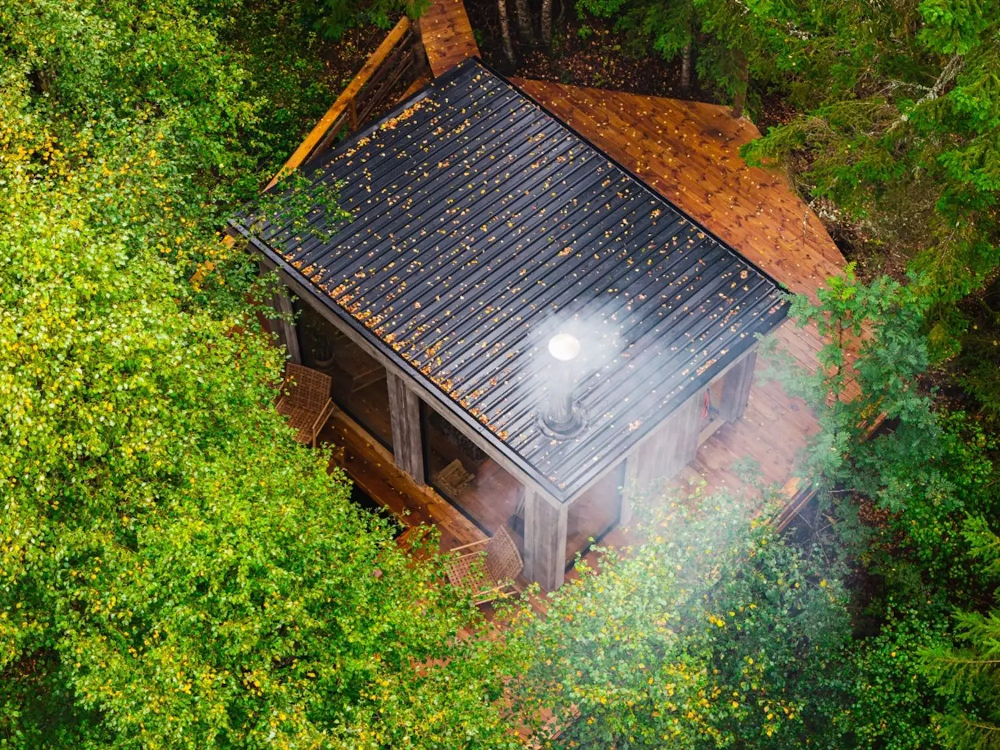
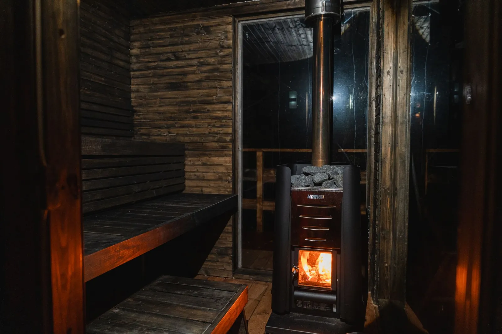

Glühende Ruhe unter dem Sternenhimmel.
Lassen Sie sich von der Stille des Waldes umarmen. Im Pinebo Palace erwarten Sie eine holzbefeuerte Sauna und ein einladender, warmer Whirlpool – für Sie während Ihres Aufenthalts. Die perfekte Ergänzung für Ihre Erholung.

Die holzbefeuerte Waldsauna
Der Duft von brennendem Birkenholz und das leise Knistern des Ofens sorgen sofort für Stimmung. Die Sauna ist im klassischen nordischen Stil gebaut, und nach der Hitze kühlen Sie sich in der kalten Dusche ab. Hier kommen Sie wirklich zur Ruhe.
- Platz für bis zu 4 PersonenViel Platz für Sie und Ihre Begleitung – das Gästehaus bietet Platz für bis zu 4 Gäste.
- Selbst einheizenGenießen Sie es, den Ofen selbst anzuheizen. Das gesamte Holz ist in Ihrer Buchung inbegriffen.
- Wärme nach WunschSie bestimmen die Temperatur selbst – von milder, sanfter Wärme bis zu intensiver, tiefer Hitze.

Whirlpool auf der Terrasse unter freiem Himmel
Steigen Sie nach einem langen Wandertag in das dampfende, 38 Grad warme Wasser – oder einfach, um den Abend perfekt ausklingen zu lassen. Der Whirlpool steht auf der Terrasse direkt vor dem Gästehaus, geschützt durch einen Sichtschutz aus Holz – mit den Baumwipfeln und dem Sternenhimmel über Ihnen.
- Immer warm und einladendDer Whirlpool hält während Ihres gesamten Aufenthalts eine angenehme Temperatur von 38 °C.
- Kristallklares WasserUmweltfreundlich aufbereitetes Wasser, sanft zur Haut und frei von aggressiven Chemikalien.
- Stimmungsvolle BeleuchtungDezente LED-Beleuchtung in sanften Farben verstärkt den Zauber der Nacht.

Der einfache Weg zur Entspannung
Das Sauna- und Whirlpool-Erlebnis im Pinebo Palace ist so gestaltet, dass es von Anfang bis Ende unkompliziert und rundum genussvoll ist.
-
Die Vorbereitung
Bei Ihrer Ankunft ist der Ofen mit trockenem Birkenholz vorbereitet. Der Whirlpool ist bereits auf perfekte 38 Grad beheizt.
-
Das Anheizen
Heizen Sie den Saunaofen in Ihrem eigenen Tempo an. Nach etwa 45 Minuten ist die Temperatur angenehm und der Duft des Waldes breitet sich aus.
-
Abkühlen
Kühlen Sie sich in der kalten Dusche oder an der frischen Luft auf der Terrasse ab – und steigen Sie dann in den warmen Whirlpool unter den Sternen.
Praktische Informationen für Ihren Besuch
Hier finden Sie die häufigsten Fragen zur Sauna und zum Whirlpool. Wenn Sie keine Antwort auf Ihre Frage finden, können Sie uns jederzeit direkt kontaktieren.
Sind Handtücher und Bademäntel inbegriffen?
Sie können eigene Handtücher mitbringen oder unser Paket mit Bettwäsche & Handtüchern (250 SEK) bei der Buchung dazunehmen. Dann sind auch große, weiche Badetücher dabei.
Wie viel Holz ist für die Sauna inbegriffen?
Für Ihren gesamten Buchungszeitraum ist immer reichlich trockenes Birkenholz inbegriffen. Sollten Sie wider Erwarten mehr brauchen, gibt es auf dem Grundstück einen Vorrat ohne Aufpreis.
Wie buche ich die Extras und was kosten sie?
Sie buchen die Sauna (400 SEK/Tag) und den Whirlpool (ab 400 SEK) ganz einfach bei der Auswahl Ihrer Daten dazu. Wenn Sie beides kombinieren, erhalten Sie automatisch einen Paketrabatt von 10 %.
Teile ich Sauna und Whirlpool mit anderen Gästen?
Nein. Das Pinebo Palace wird jeweils nur an eine Gruppe vermietet, Sauna und Whirlpool sind also nur für Sie da. Wir Gastgeber wohnen in einem eigenen Haus auf demselben Hof, doch Gästehaus und Terrasse liegen für sich und sind von unserem Haus abgewandt.
Gibt es eine Dusche nach der Sauna?
Ja – kühlen Sie sich nach der Sauna in der kalten Dusche ab. Viele Gäste finden das nach einem Wandertag besonders herrlich.
Lassen Sie sich von der warmen Ruhe des Waldes erwarten.
Wählen Sie Ihre Daten, buchen Sie Sauna und Whirlpool dazu und genießen Sie ein abgeschiedenes Gästehaus im Wald bei Ulricehamn. Kostenlose Stornierung bis 14 Tage vor der Anreise.
Keine versteckten Buchungsgebühren.